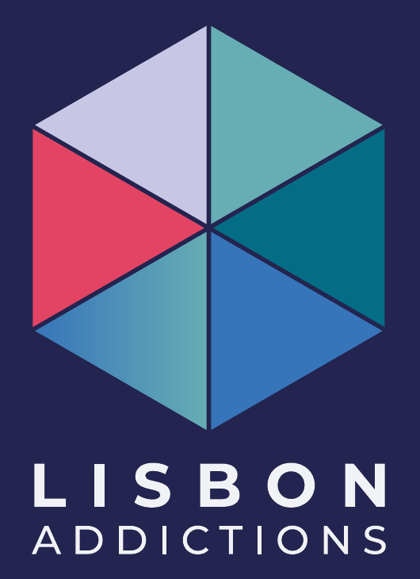
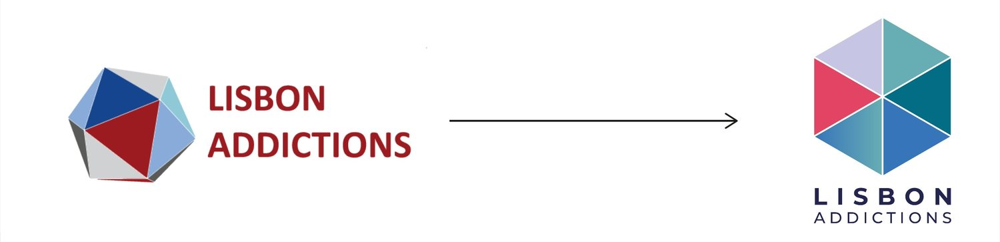

Lisbon Addictions 2027
Visual identity and communication system for the 6th European Conference on Addictive Behaviours and Dependencies, taking place in Lisbon in October 2027.

- Client
- European Union Drugs Agency (EUDA), with ICAD, SSA and ISAJE
- Studio
- Magellan Circle
- My role
- Visual identity design and its application
- Deliverables
- Logo, brand book, social media and web templates
- Year
- 2026
The challenge
A scientific conference on a sensitive subject, organised by four institutions, needed one identity that feels credible, modern and human. It had to avoid stigma, sit comfortably beside four partner logos, and work from a phone screen to the main stage. The previous logo, a 3D polyhedron with heavy shading, was cluttered and hard to scale.
What I did
- Redesigned the symbolI redrew the 3D polyhedron as a flat hexagon of six equal triangles, a mark that stays recognisable from a favicon to a stage backdrop.
- Built a system, not just a logoLogo versions, palette, typefaces and a triangle-based graphic language, documented in a brand book so any team can apply them consistently.
- Designed for accessibilityContrast and legibility rules aligned with WCAG 2.1 AA, and photography guidelines that avoid stigmatising imagery.
- Made it easy to useSocial media and web templates, plus co-branding rules for working alongside the partners’ logos.

The palette
- Navy#23244F
- Blue#3775BA
- Deep teal#046C86
- Teal#66ADB4
- Lavender#C7C6E5
- Coral#E44464
Montserrat for titles, Arial for body text. The coral is inherited from the first logo, so the new identity keeps a link to the old one.
Outcome
The identity was formally approved by the European Union Drugs Agency on 21 August 2026 and is now used across the conference’s social media and web communication, as shown below.
The identity in use
Announcements, call for abstracts, co-organiser spotlights and reusable templates for the team to fill in. Tap a piece to enlarge it.